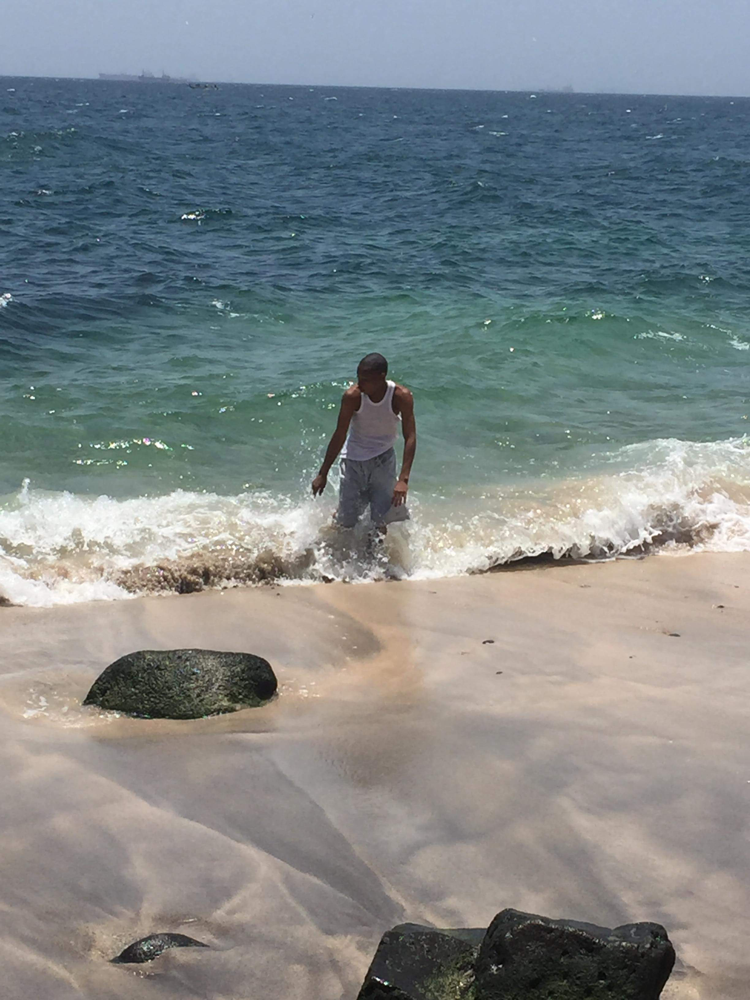

La Natation

comme loisir je préfère La Natation qui est un sport à impacte faible, c'est une activité très bénéfique pour les muscle.
Dans l'eau,vous pesez 90% de moins et vous épargnez donc bien plus votre corps.
Pétite Histoire :c'etait mes premières vaccances en 2017 au Sénegal (île de Gorée)
c'est une île de l'océan Atlantique Nord situé dans la bale de Dakar.
C'est un lieu symbolique de la mémoire de la traite négrière en Afrique.fut ainsi l'un des Tout
prémiers lieux à étre portés sur la liste du patrimoine Mondiale.
Ici c'etait mon séjours à l'île de ROOM en Guinée Conakry
Toutes ces choses me rappelent gravement les moments que j'avais passer pendant mon cursus scolaire!!!!